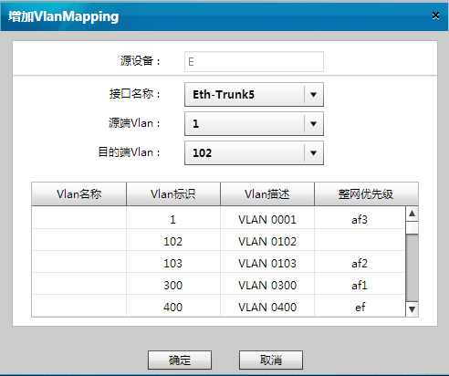

增加VLAN Mapping
操作步骤
在“定义流”对话框，点击“AC侧管理”，弹出“AC侧管理”对话框。
选择“VlanMapping管理”页签，点击选择源设备，然后点击“增加”，弹出“增加VlanMapping”对话框。

根据规划好的数据，在下拉列表中选择接口名称，源端Vlan和目的端Vlan。
点击“确定”，提交配置。
父主题：
VLAN Mapping管理
华为专有和保密信息
版权所有 © 华为技术有限公司